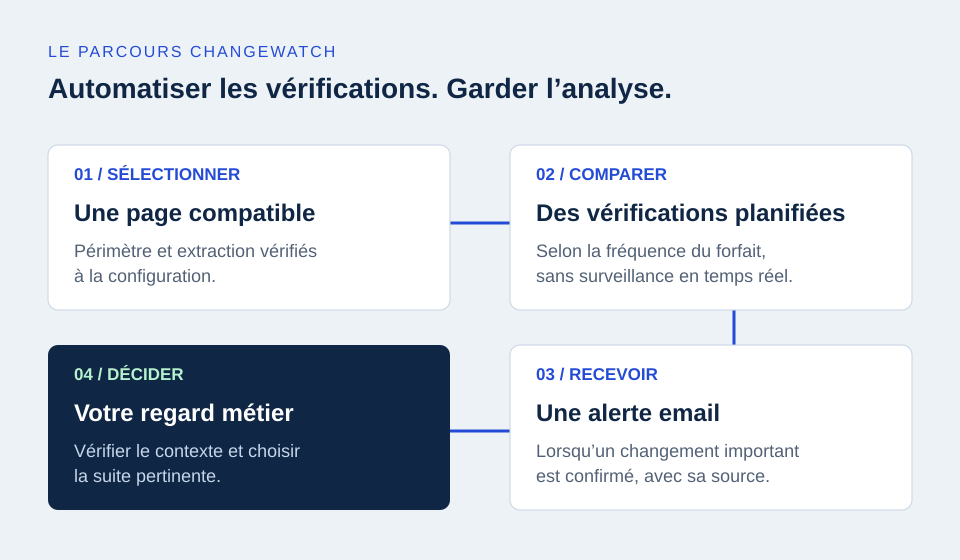

Lundi matin : vous ouvrez une fiche concurrente, puis une autre. Un prix semble avoir baissé. Mais depuis quand ? Sur quelle variante ? Et la livraison est-elle toujours payante ? Votre veille concurrentielle e-commerce doit vous aider à répondre à ces questions, sans transformer chaque journée en tournée des boutiques.
Le bon point de départ n’est pas de tout surveiller. C’est de définir les décisions que vous voulez éclairer, les pages qui contiennent l’information et la manière de traiter un changement. Voici une méthode pour construire un suivi utile, du premier tableau aux alertes automatisées.
À RETENIR
Une veille utile relie une page à une décision. Choisissez un périmètre précis, comparez des offres équivalentes et vérifiez le contexte avant d’agir. L’automatisation prend en charge des vérifications ; elle ne remplace pas votre analyse.
01. Partez de vos décisions, pas d’une liste de concurrents
La veille concurrentielle consiste à observer les évolutions de votre marché pour nourrir vos choix. Pour un responsable e-commerce, elle peut servir à examiner un positionnement tarifaire, préparer une opération commerciale ou repérer une évolution d’assortiment. Ces objectifs ne demandent pas les mêmes sources.
Posez une question simple à votre équipe : « Si cette information change, que ferons-nous ? » Pour un produit stratégique, une variation de prix peut déclencher une vérification de marge. Pour une collection saisonnière, une nouveauté peut alimenter votre prochaine réunion d’offre. Une information sans usage identifié risque surtout d’ajouter du bruit.
La rubrique Veille et études de marché de France Num permet de replacer ce travail dans une démarche plus large de développement commercial. Votre suivi des pages concurrentes en constitue une composante, à compléter avec votre connaissance des clients et vos données internes.
02. Construisez un périmètre que vous pouvez expliquer
Commencez avec quelques concurrents réellement comparables : même clientèle, catégories proches, zone de livraison pertinente. Distinguez les concurrents directs des enseignes qui vous servent seulement de référence. Un acteur généraliste peut inspirer votre merchandising sans être le bon repère pour chaque prix.
Choisissez ensuite des URLs précises. Une fiche produit aide à suivre une référence ; une page de collection peut renseigner sur une partie de l’assortiment ; une page de livraison documente des conditions commerciales. Évitez d’inscrire seulement le nom du site : vous devez savoir quelle page fournit quel signal.
| Votre question | Page à examiner | Point de vigilance |
|---|---|---|
| Le prix d’une référence évolue-t-il ? | Fiche produit et variante précise | Format, couleur, lot, promotion conditionnelle |
| L’assortiment change-t-il ? | Collection ou catégorie | Pagination, tri et produits effectivement accessibles |
| L’offre devient-elle plus attractive ? | Promotion ou conditions de livraison | Dates, seuil de panier, destination et exclusions |
Notez pour chaque URL son propriétaire dans votre équipe, l’information recherchée et la dernière vérification. Si une page ne répond plus à votre question, remplacez-la. La qualité du périmètre compte davantage que la longueur de la liste.
03. Comparez la même offre, pas seulement deux nombres
Une baisse affichée peut être importante sans justifier un alignement. Avant d’interpréter un prix, vérifiez la référence, la variante, la quantité, la devise et les conditions d’achat. Un tarif réservé aux membres ou activé par un code n’est pas directement comparable à votre prix public.
Exemple fictif : un sac passe de 99 € à 79 € sur une page suivie. L’écart est de 20 €, soit environ 20,2 % du prix initial. Mais si la réduction concerne uniquement une couleur en déstockage, votre conclusion ne sera pas la même que pour une baisse permanente sur toute la gamme.

Les spécifications des données produit de Google Merchant Center distinguent notamment les variantes, les prix et la disponibilité. Cette documentation concerne les flux destinés à Google ; elle fournit aussi un repère utile pour identifier les attributs à contrôler dans votre propre grille de comparaison.
Ne déduisez pas non plus une rupture définitive d’une disparition ponctuelle. Une modification de tri, une variante sélectionnée ou une page temporairement inaccessible peut expliquer ce que vous voyez. Conservez la source et la date de votre observation pour pouvoir revenir au fait initial.
04. Choisissez ce qui reste manuel et ce qui peut être automatisé
Un tableau partagé suffit pour commencer : URL, produit ou offre, valeur observée, date, commentaire et action éventuelle. Le suivi manuel vous oblige à comprendre les pages et leurs particularités. Il reste pertinent pour une analyse ponctuelle ou pour lire en profondeur une nouvelle proposition commerciale.
Sa difficulté est la répétition. Il faut rouvrir les mêmes pages, comparer avec une observation précédente et garder des notes cohérentes. Lorsque le périmètre grandit, une routine peut devenir irrégulière ou dépendre d’une seule personne.
L’automatisation est utile pour ces vérifications répétitives, sur des pages techniquement compatibles. Elle ne dispense pas de choisir les bonnes URLs ni d’interpréter les alertes. Une organisation simple consiste à automatiser l’observation des pages clés, puis à réserver un temps humain à l’examen des changements et aux décisions.
VOIR LE PARCOURS
À quoi ressemble un changement détecté ?
Une page, un prix avant / après, puis un email avec la source : explorez notre exemple fictif.
Voir la démonstration ↗05. De la page surveillée à l’alerte ChangeWatch
ChangeWatch est un service de veille destiné aux professionnels. Vous choisissez un forfait puis nous finalisons ensemble les pages à suivre. La configuration manuelle incluse permet de préciser leur compatibilité, leur couverture et les informations accessibles. Il n’y a pas de logiciel à installer dans votre boutique.

Les pages sont vérifiées une fois par jour avec Starter et Business, et jusqu’à trois fois par jour avec Pro. Lorsqu’un changement important est confirmé, une alerte email présente l’information et renvoie à la source. Les contenus instables ou répétitifs sont filtrés pour limiter les alertes inutiles ; les changements ambigus peuvent nécessiter une confirmation.
Dans notre exemple fictif, l’email signale le passage de 99 € à 79 €. Vous pouvez alors ouvrir la page, vérifier les conditions de la promotion et décider si une action est pertinente. Le service signale une évolution : il ne modifie pas vos prix et ne garantit aucun résultat commercial.
Lorsqu’aucune alerte significative n’est envoyée, un récapitulatif hebdomadaire vous informe de l’activité de surveillance. Pour choisir le volume adapté à votre périmètre, consultez les forfaits ChangeWatch et leur fréquence de vérification.
06. Vérifiez la couverture réelle et ses limites
Une URL n’équivaut pas à un catalogue complet. Sur une collection paginée, les produits des pages suivantes peuvent ne pas être extraits. Le chargement progressif, le tri ou la structure de la page peuvent aussi modifier la portion visible. Demandez quelles données sont effectivement suivies avant d’en tirer une conclusion sur l’ensemble du site.
Les pages nécessitant une connexion ne sont pas prises en charge. JavaScript, protections contre les accès automatisés et changements de structure peuvent limiter ou empêcher l’extraction sur une page publique. Une compatibilité vérifiée à la configuration n’est pas une promesse de fonctionnement universel et permanent.
La fréquence compte également. Entre deux vérifications, une promotion peut apparaître puis disparaître. ChangeWatch ne propose pas de surveillance en temps réel et ne garantit pas la détection de tous les changements. Définissez une attente cohérente avec vos usages, plutôt qu’une promesse d’exhaustivité.
Enfin, un contenu public n’est pas automatiquement libre de toute contrainte. Si votre démarche implique des données personnelles, consultez les recommandations de la CNIL sur la réutilisation de données publiées sur internet. Pour votre veille commerciale, concentrez-vous sur les informations produit et les conditions d’offre nécessaires à votre objectif.
07. Transformez chaque alerte en une petite routine de décision
Attribuez le traitement des alertes à une personne identifiée. Sans responsable, une notification finit facilement entre deux équipes. L’objectif n’est pas de réagir à tout, mais de distinguer un changement à examiner d’une variation sans conséquence pour votre activité.
- Confirmer le fait. Ouvrez la source et vérifiez la variante, la date et les conditions visibles.
- Évaluer l’enjeu. Le produit est-il stratégique ? Votre marge permet-elle une réponse ? L’offre est-elle réellement comparable ?
- Choisir une suite. Ajuster une mise en avant, approfondir l’analyse, préparer une opération ou ne rien changer.
- Garder une trace. Notez le signal, le raisonnement et la décision pour préparer votre prochain point d’équipe.
Par exemple, une livraison offerte au-delà d’un nouveau seuil peut inviter à revoir votre présentation des frais plutôt qu’à réduire vos prix. Une nouvelle collection peut nourrir votre analyse d’assortiment sans nécessiter d’action immédiate. L’intérêt de la veille est de mieux choisir votre réponse, pas de copier chaque mouvement concurrent.
Commencez avec un périmètre clair
Choisissez vos premières pages, précisez ce que vous voulez observer et identifiez la personne qui examinera les changements. Ce cadre simple rend le suivi manuel plus rigoureux et l’automatisation plus utile. Vous pourrez ensuite élargir le périmètre à partir de vos besoins réels.
ChangeWatch peut prendre en charge les vérifications répétitives de vos pages compatibles, avec des alertes email et une configuration accompagnée. Starter couvre 5 URLs à 14,90 €/mois, Business 15 à 29,90 €/mois et Pro 40 à 59,90 €/mois. Les forfaits sont mensuels, sans engagement. TVA non applicable — art. 293 B du CGI.
LA PROCHAINE ÉTAPE
Gardez votre temps pour l’analyse.
Choisissez un forfait ou faites préciser la compatibilité des pages qui comptent pour vous avant de vous abonner.
Service réservé aux professionnels. Consultez les conditions de vente et les questions fréquentes.
Commentaires
Une question, un retour ou une expérience à partager ?